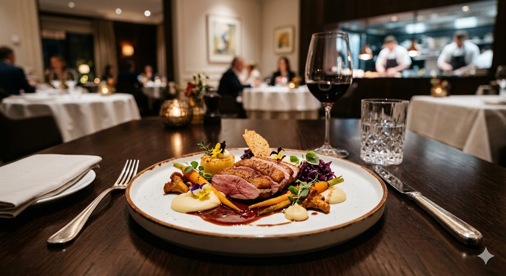
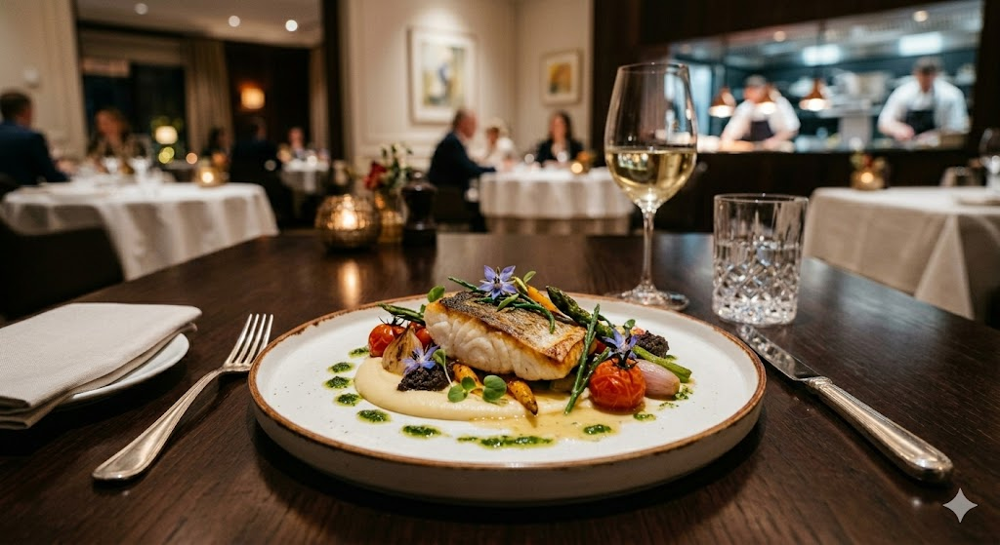
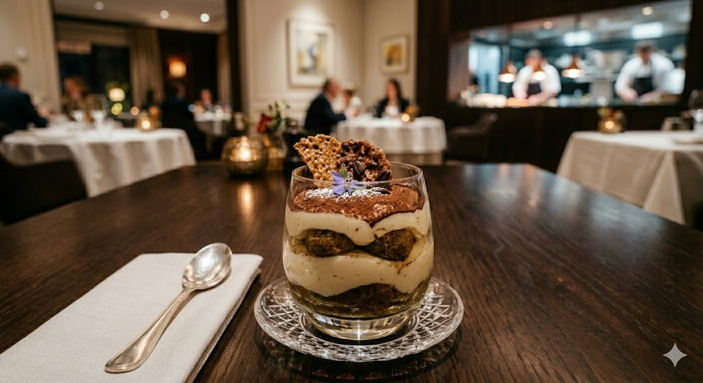
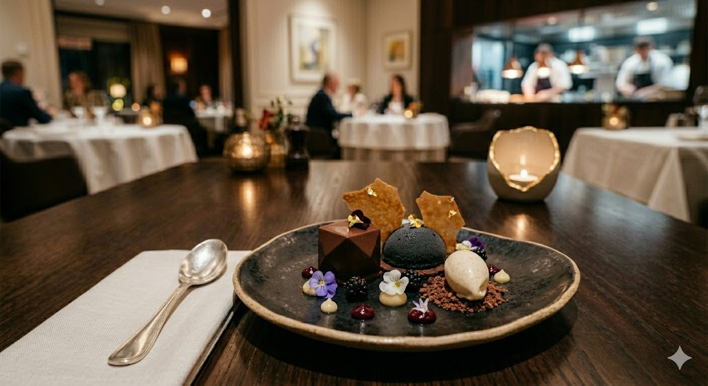

L'Atelier
Bienvenue dans notre atelier ! Offre un'esperienza culinaria sofisticata e multisensoriale, basata su materie prime eccellenti, stagionalità, di cottura innovative e un servizio curato nei minimi dettagli. Non solo cibo, ma un percorso studiato tra contrasti di temperature, consistenze e un impiattamento curato esteticamente.

"La cucina di Giuseppe non nasce tra quattro mura, ma lungo le strade del mondo. Ogni piatto è il diario di un viaggio, una sintesi perfetta tra le tecniche sofisticate apprese nelle grandi cucine e le suggestioni sensoriali raccolte in giro per il globo. Dalle spezie d'Oriente alle cotture ancestrali, Giuseppe trasforma i suoi ricordi in esperienze gourmet, dove l'ingrediente locale incontra un'anima internazionale.

"A guidare l'ospite nel viaggio sensoriale creato dallo Chef Giuseppe c'è Ach, Chef de Rang con una profonda cultura dell'accoglienza. Grazie a una solida esperienza in sale di alto livello, Ach trasforma il servizio in un racconto: ogni gesto è studiato, ogni spiegazione è un invito a scoprire i segreti dietro i piatti sofisticati della nostra cucina. Per lui, l'eccellenza non è solo nel piatto, ma nella cura invisibile e perfetta di ogni dettaglio a tavola."

All’Atelier, l’eccellenza nasce dalla sinergia tra due mondi. La nostra brigata di cucina, guidata dallo Chef Executive, lavora con rigore e creatività per trasformare materie prime d'eccezione in opere d'arte gastronomiche. In sala, il nostro team di accoglienza cura ogni dettaglio con discrezione e calore, guidandovi in un percorso sensoriale dove il servizio diventa narrazione. Insieme, trasformiamo una cena in un’esperienza memorabile.

Il Carrè dell'Atelier in Crosta di Erbe
La Materia Prima: Costolette di agnello selezionato, marinate al timo citrino e cotte a bassa temperatura per preservarne la succosità rosata.
L'Esperienza Gustativa: > Il momento dell'assaggio è una rivelazione: la croccantezza sapida della crosta di pistacchio si scioglie in una carne incredibilmente tenera, sprigionando un'armonia di sapori che avvolge il palato in un calore profondo e persistente. È un equilibrio perfetto, dove la dolcezza delle carote baby e l'intensità del fondo bruno creano un connubio semplicemente
Il Tocco Finale: Vellutata di sedano rapa e riduzione al Porto invecchiato.

"L'Oro del Tirreno":
Un pregiato trancio di ombrina scottata sulla pelle per renderla croccante,
servito su una vellutata di patate Ratte e zafferano.
Il piatto è impreziosito da frutti di bosco acidulati,
gel di prezzemolo e fiori di borragine,
che donano freschezza e un tocco di colore vibrante.

Eclissi di Sottobosco:
Cubo di ganache al fondente Ecuador 72%,
cupola vellutata al mirtillo e ibisco,
quenelle di gelato alla fava Tonka su terra di cacao salato e foglia d’oro.

Il Dessert Gourmet:
Un viaggio sensoriale tra diverse consistenze.
Il piatto presenta un cubo di mousse al cioccolato fondente 72% Valrhona,
una semisfera di cremoso ai mirtilli neri e una quenelle di gelato alla fava Tonka.